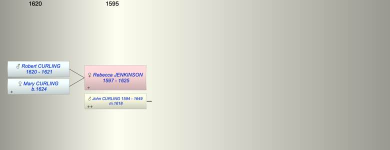

| [Index] |
| Rebecca JENKINSON (1597 - 1625) |
|  |
| b. 1597 |
| m. 11 Jan 1618 John CURLING (1594 - 1649) at St Margaret, Canterbury |
| d. Aug 1625 aged 28 |
| Children (2): |
| Robert CURLING (1620 - 1621) |
| Mary CURLING (1624 - ) |
| Events in Rebecca JENKINSON (1597 - 1625)'s life | |||||
| Date | Age | Event | Place | Notes | Src |
| 1597 | Rebecca JENKINSON was born | Note 1 | |||
| 11 Jan 1618 | 21 | Married John CURLING (aged 24) | St Margaret, Canterbury | Note 2 | |
| 1620 | 23 | Birth of son Robert CURLING | Aldgate | Note 3 | |
| 1621 | 24 | Death of son Robert CURLING (aged 1) | Aldgate | Note 4 | |
| 1624 | 27 | Birth of daughter Mary CURLING | St Peter, Thanet | Note 5 | |
| Aug 1625 | 28 | Rebecca JENKINSON died | Note 6 | ||
| Created on a Mac™ using iFamily for Mac™ on 8 Oct 2023 |